PLSWORK and SaturationAwareBackgroundV2
PLSWORK MLP: higher precision and F1. V2 coarse: higher recall and more false alarms.
Same 585,464 known query centers and 95 VIIRS-positive labels. Previously examined benchmark; no new training or threshold tuning. VIIRS defines the reference, so its perfect row is a self-comparison.
Comparison and methods · Metrics CSV · Metrics and source verification
Overall comparison
Each model uses its existing frozen policy. Policies were selected differently; these are not equal-alert-budget comparisons. VIIRS defines the reference labels.
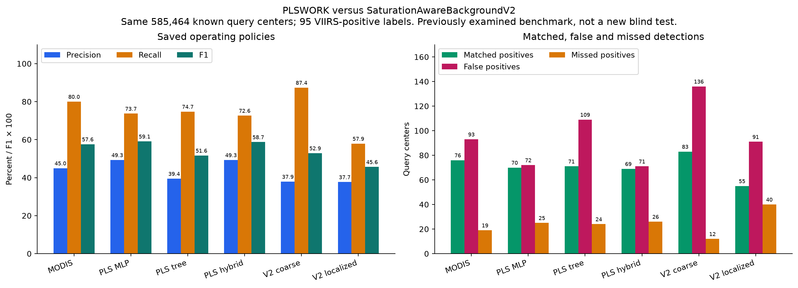
PNG · PDF
Precision–recall ranking
Dots/squares show frozen operating points. Curves are diagnostic sweeps of saved scores; no new threshold was selected. V2 localization has a binary policy, so it is shown as a point only. VIIRS self-comparison is omitted from ranking curves.
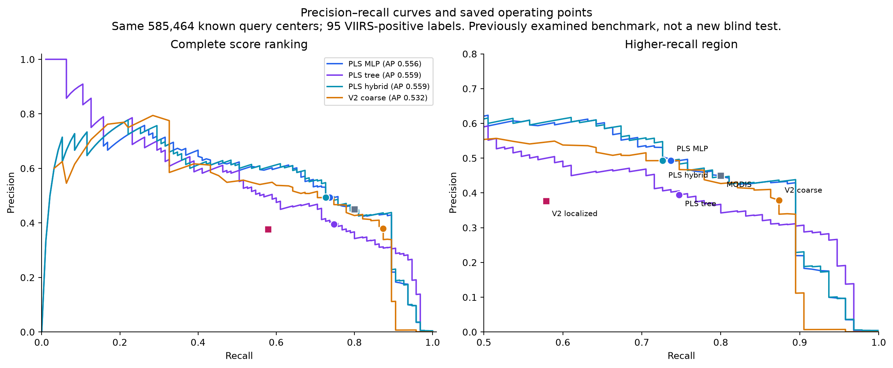
PNG · PDF
Comparison at native MODIS-cell scale
PLS MLP and hybrid use separately frozen validation cell policies; V2 preserves its native alert policy. The MLP cell comparator uses CPU float32 scores; its original query comparator used BF16. No saved tree cell policy exists, so none was fitted for this chart. Partial observed support is not a full physical footprint.
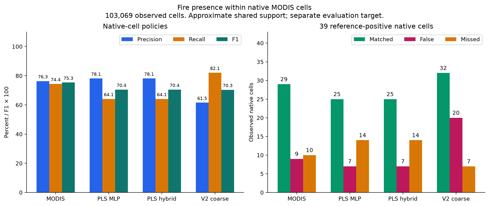
PNG · PDF
Shared scene: all models
This display uses the test tile with the most positive labels; it is not a typical-scene claim. The crop includes the union of reference positives and all model alerts in that tile, with an eight-query margin. Maps use query indices, not a claim of finer measured thermal resolution.
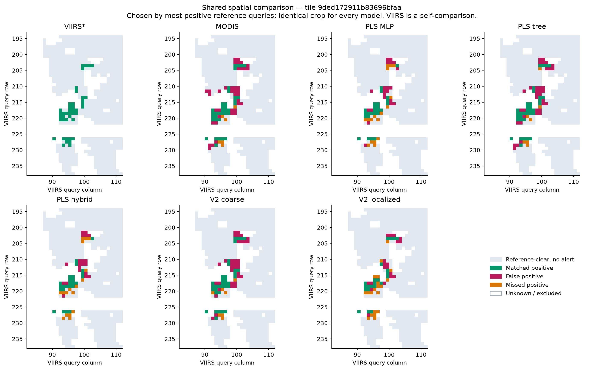
PNG · PDF
VIIRS reference
Top panels cover the complete benchmark; bottom panels show the same selected tile and crop (9ded172911b83696bfaa). Self-comparison; not independent accuracy.
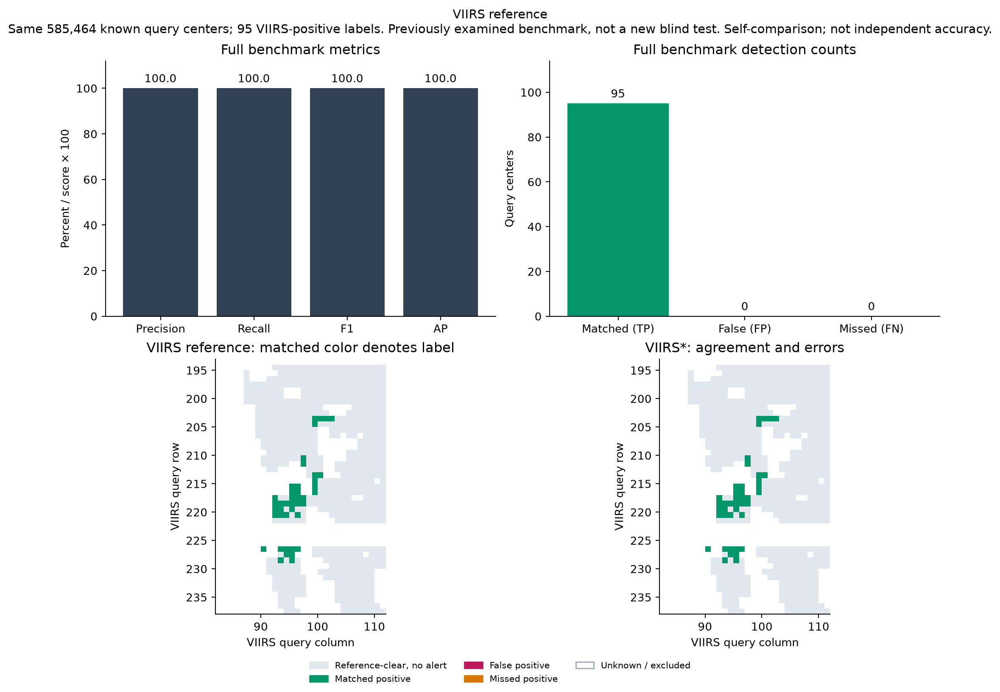
PNG · PDF
Standard MODIS
Top panels cover the complete benchmark; bottom panels show the same selected tile and crop (9ded172911b83696bfaa).
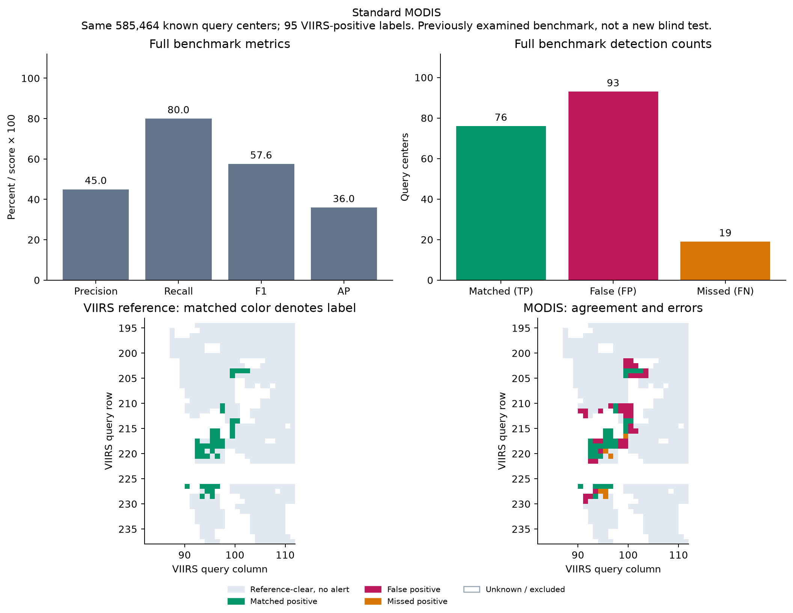
PNG · PDF
PLSWORK contextual MLP
Top panels cover the complete benchmark; bottom panels show the same selected tile and crop (9ded172911b83696bfaa).
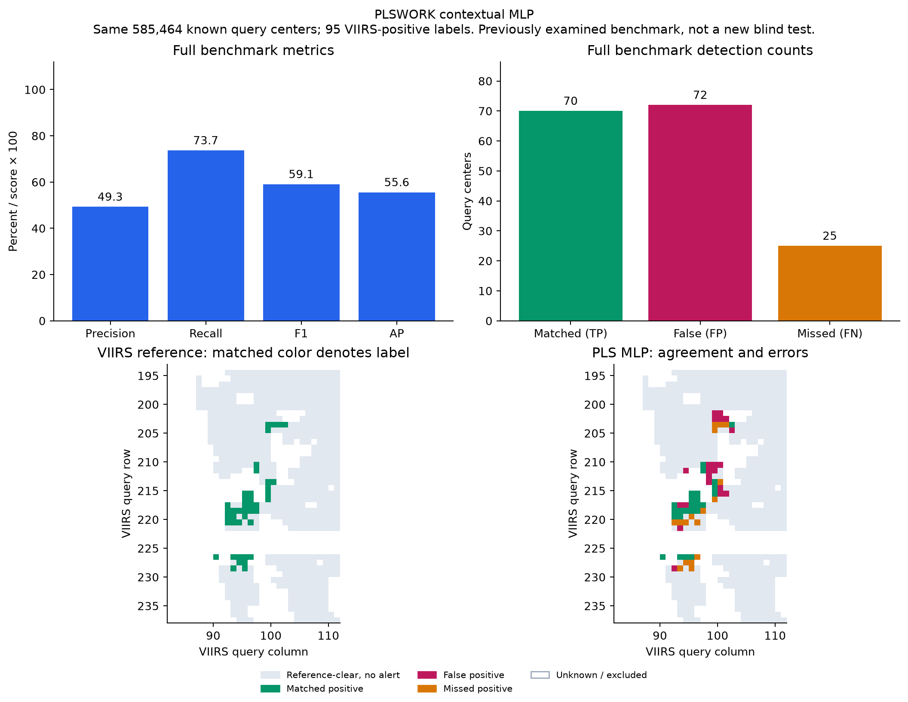
PNG · PDF
PLSWORK tree baseline
Top panels cover the complete benchmark; bottom panels show the same selected tile and crop (9ded172911b83696bfaa).
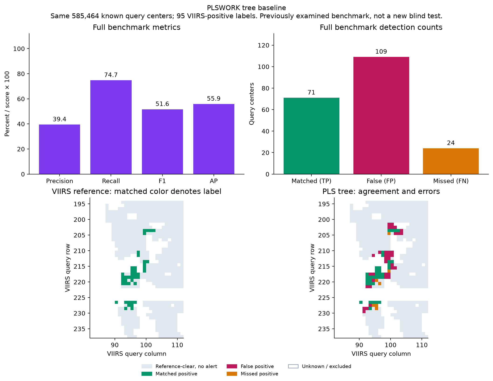
PNG · PDF
PLSWORK neural/tree hybrid
Top panels cover the complete benchmark; bottom panels show the same selected tile and crop (9ded172911b83696bfaa).
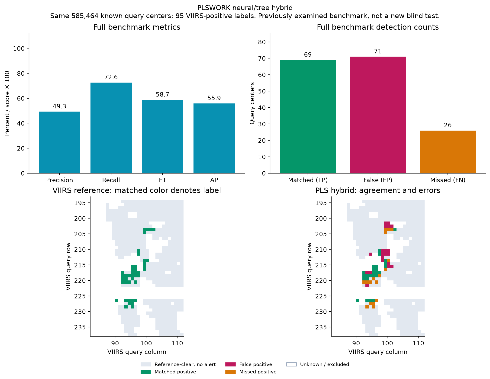
PNG · PDF
SaturationAwareBackgroundV2
Top panels cover the complete benchmark; bottom panels show the same selected tile and crop (9ded172911b83696bfaa).
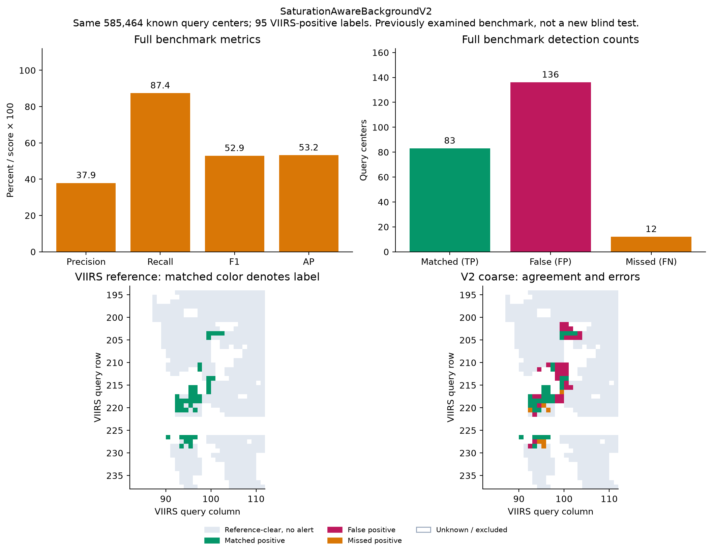
PNG · PDF
V2 with localization
Top panels cover the complete benchmark; bottom panels show the same selected tile and crop (9ded172911b83696bfaa).
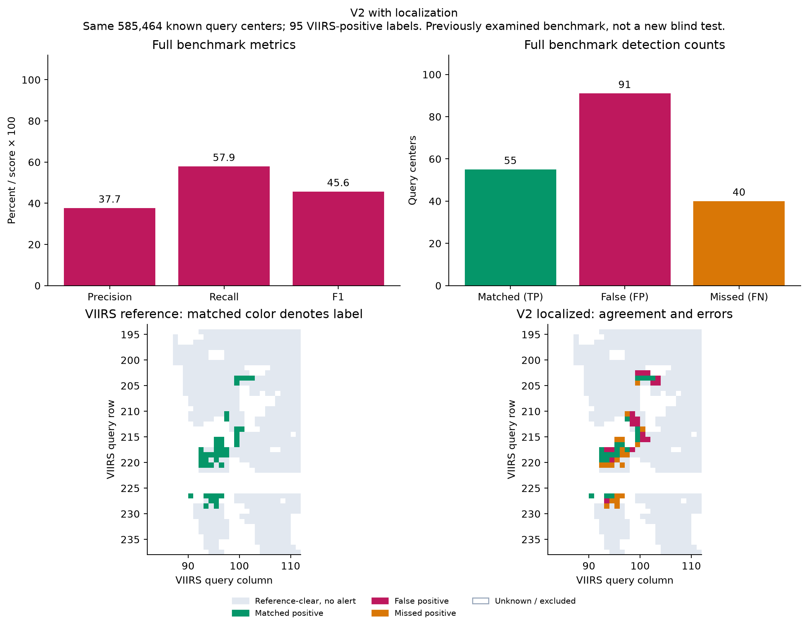
PNG · PDF
Results by overpass
All benchmark locations are retained, including overpasses with few or no positive labels. Compare using the same count scale across panels.
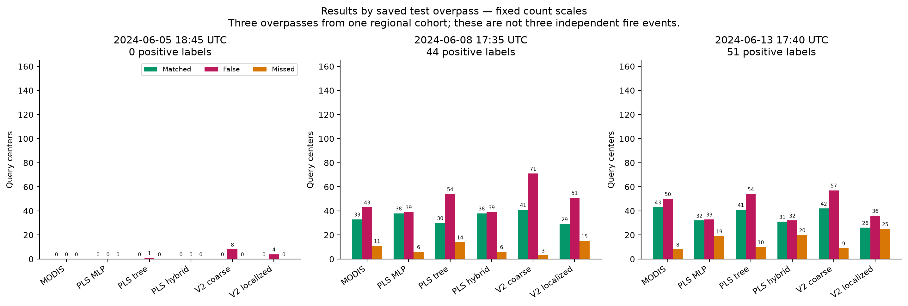
PNG · PDF
Saved learning curves
These curves describe their original experiments; no model was retrained. Different objectives, development composition and precision prevent a direct training-loss comparison.
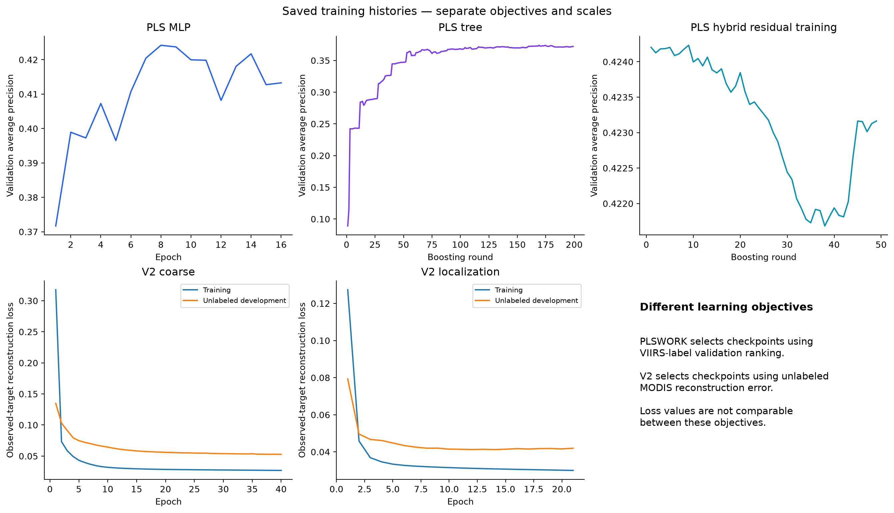
PNG · PDF